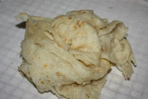

Key's Homepage
Home
Greek Garbanzo Bean Salad
Paratha Roti
Buss Up Shut Roti

How to Make Buss Up Shut (Paratha) Roti
Prep Time: 30 Minutes
Cook Time: 10 Minutes
Total Time: 40 Minutes
Serves 6
INGRIDIENTS
5 Cup of flour (all purpose)
3 teaspoon baking powder
1/4 Teaspoon Salt
3 Cups Water
1 tablespoon vegetable oil(to work into dough)
6 tablespoons of grass fed ghee
DIRECTIONS
in large bowl add the flour, salt and baking powder.
Stir in water and knead.
after you have a solid dough ball add 1 tablespoon of ghee and knead again.
let it rest for 15 minutes.
break into 6 even pieces and roll out into flat circles.
spread ghee on the circles with a knife split the circle down the middle about half way through.
roll up like a crescent.
let sit for 15 minutes.
heat tawa or griddle pan on medium high heat.
roll out pieces into flat circles again
spread ghee and cook on each side for about 30 seconds. then flip.
cook until the roti start getting brown spots.
Whisk egg yolk mixture back into remaining sugar mixture.
Bring to a boil and continue to cook while stirring constantly until thick.
Remove from heat.
Pour filling into baked pastry shell.